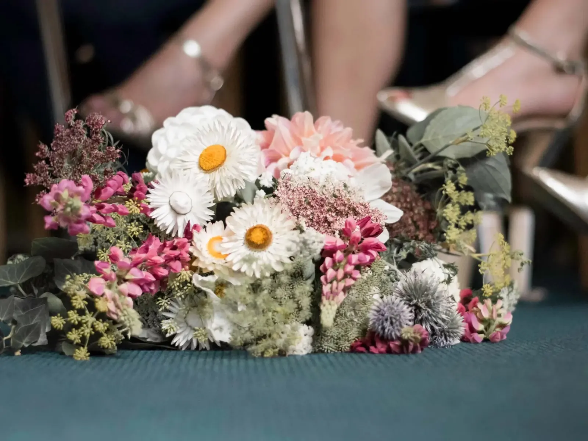
Événements
De mai à octobre, nous fleurissons vos événements : les fleurs et feuillages vous sont préparés sous forme de brassées, dans des seaux.
Pour un mariage, prévoir entre 300 et 600 €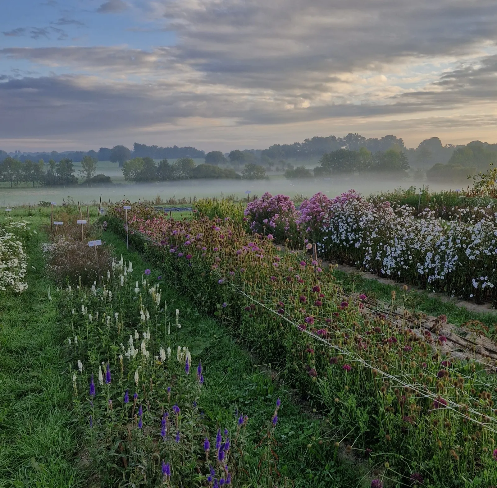
Brindille, ferme florale locale et écologique
Une trentaine d'espèces de fleurs bio de mars à octobre, sélectionnées une à une pour leur tenue en vase. Pour les particuliers comme pour les fleuristes.
06 77 63 32 89, appel ou smscontact@brindille-fermeflorale.fr
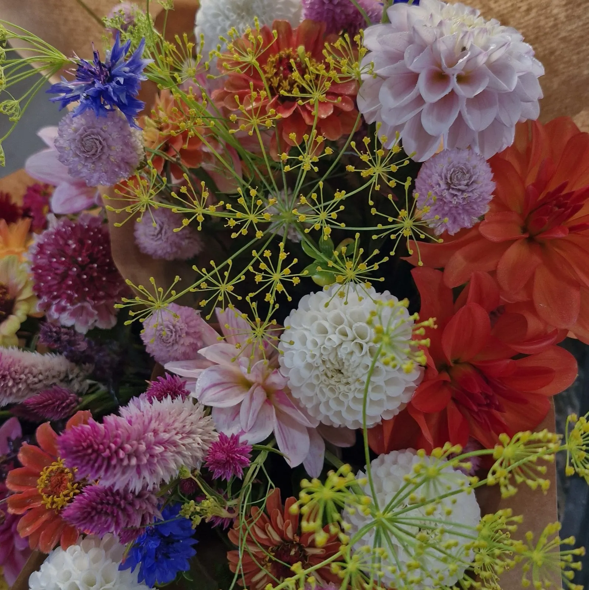
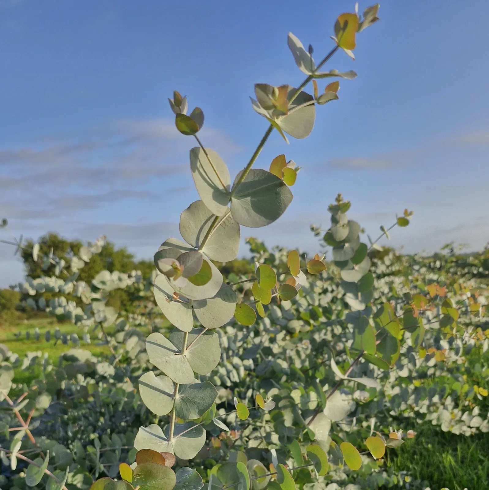
Nous proposons une trentaine d'espèces de fleurs bio de haute qualité de mars à octobre. Chaque année, nous les sélectionnons une à une pour vous assurer une bonne tenue en vase, et des couleurs et des formes qui régaleront vos yeux.
Toujours quelques grands classiques, et des fleurs que vous ne connaissez pas forcément. Elles ont toutes en commun d'être ultra-fraîches, cueillies au meilleur moment pour durer en vase.
Un bouquet sans feuillage, c'est comme un jardin sans herbe. Dès notre arrivée sur la ferme, nous avons planté de nombreux arbres et arbustes afin de produire des feuillages bio atypiques.
Des toutes petites, des pulpeuses, des toutes simples, des multicolores.
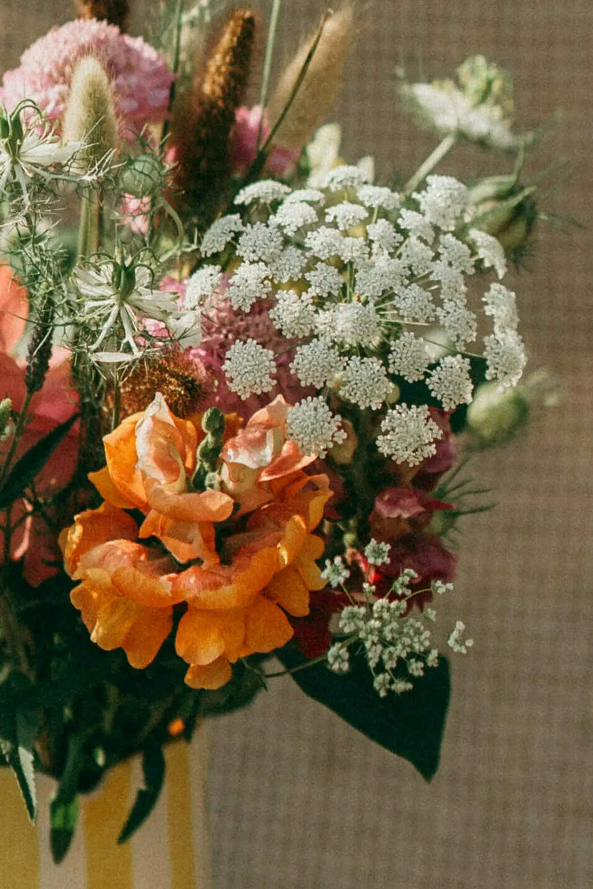
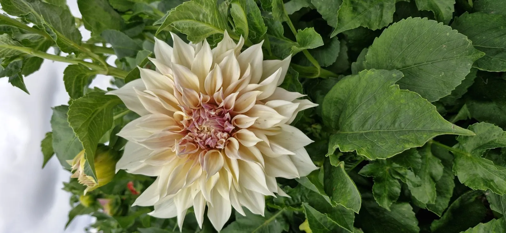
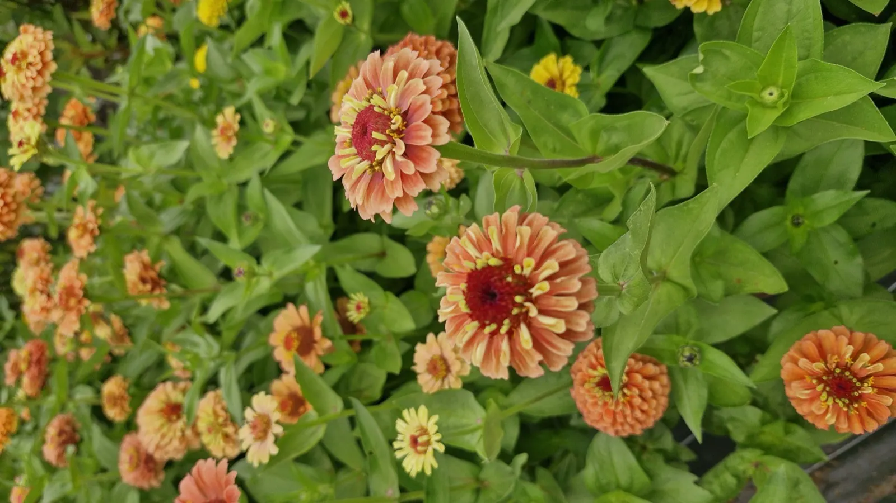
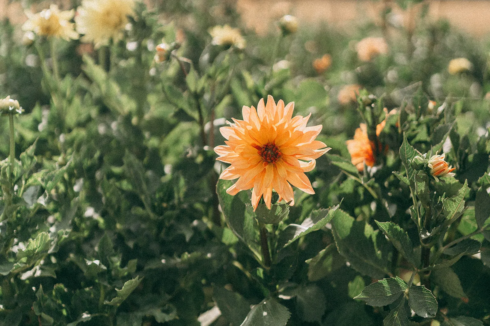
Nos fleurs et feuillages sont à destination des particuliers comme des professionnels.
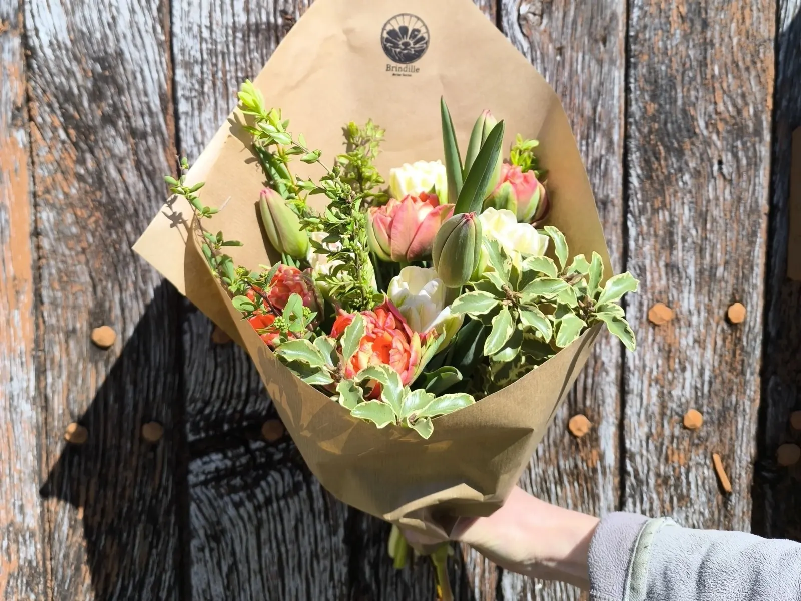
Sur les promenades, tous les jeudis matin
S'y rendreBazougers, mardi soir, vendredi soir et samedi matin
Plus d'infosChâteau-Gontier, mercredi matin, vendredi soir et samedi matin
Plus d'infosLe Mans, bouquets frais ou secs livrés en fin de semaine
Plus d'infosContactez-nous pour savoir dans quelles boutiques retrouver nos fleurs.
Nous demander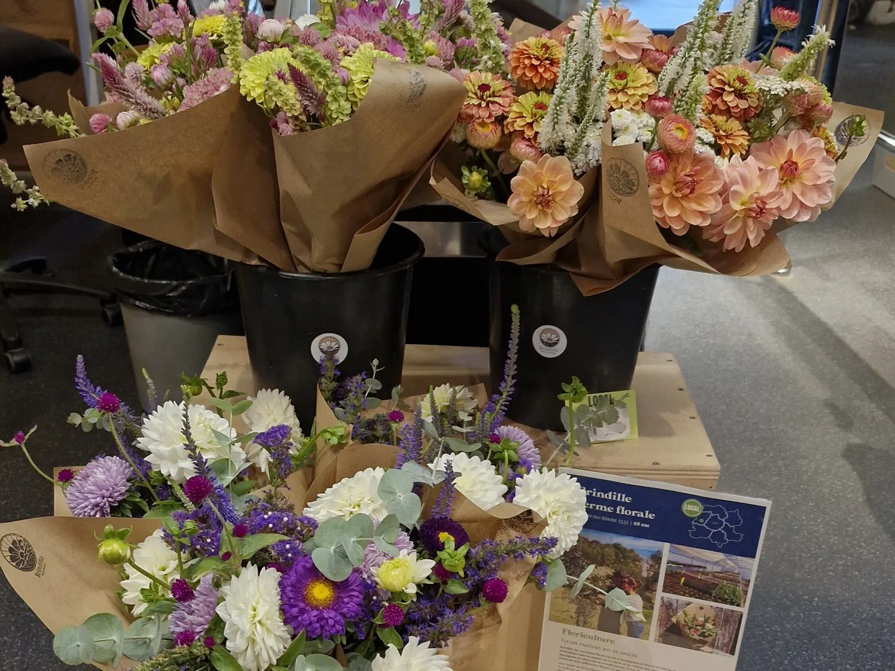
Un anniversaire, une soirée, ou simplement pour vous faire plaisir : bouquets sur commande par téléphone, appel ou sms, au minimum 48 h à l'avance. 06 77 63 32 89
Quelques week-ends dans l'année, une cueillette à la ferme : suivez-nous sur Instagram pour en connaître les dates.
Nous organisons pour vous une récolte sur mesure, avec des fleurs locales et de saison.

De mai à octobre, nous fleurissons vos événements : les fleurs et feuillages vous sont préparés sous forme de brassées, dans des seaux.
Pour un mariage, prévoir entre 300 et 600 €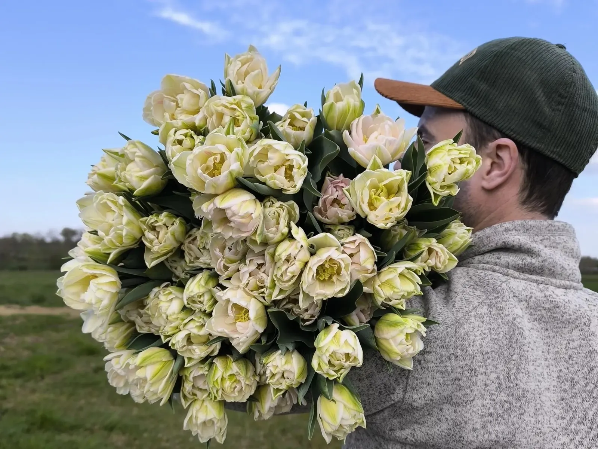
Des fleurs et feuillages cultivés localement, sélectionnés pour leur fraîcheur et leur tenue en vase. Livraison entre Le Mans, Laval et Château-Gontier.
Notre approche s'inscrit dans le mouvement Slow Flower : des fleurs locales, qui n'ont pas fait le tour du monde ni passé une semaine dans un frigo, et des fleurs saines, non traitées, produites suivant le cahier des charges du bio.
Tous les deux ingénieurs paysagistes de formation, nous avons exercé plus de 10 ans comme concepteurs paysagistes dans le Grand Ouest, en multipliant les séjours de travail volontaire dans des fermes. En 2020, rejoindre la Slow Flower devient une évidence ; en 2024, nous trouvons enfin une ferme pour nous accueillir, à Meslay-du-Maine.
Une micro-ferme écologique, à échelle humaine : moins d'un hectare, intrants biologiques uniquement, travail minimal du sol et eau raisonnée.
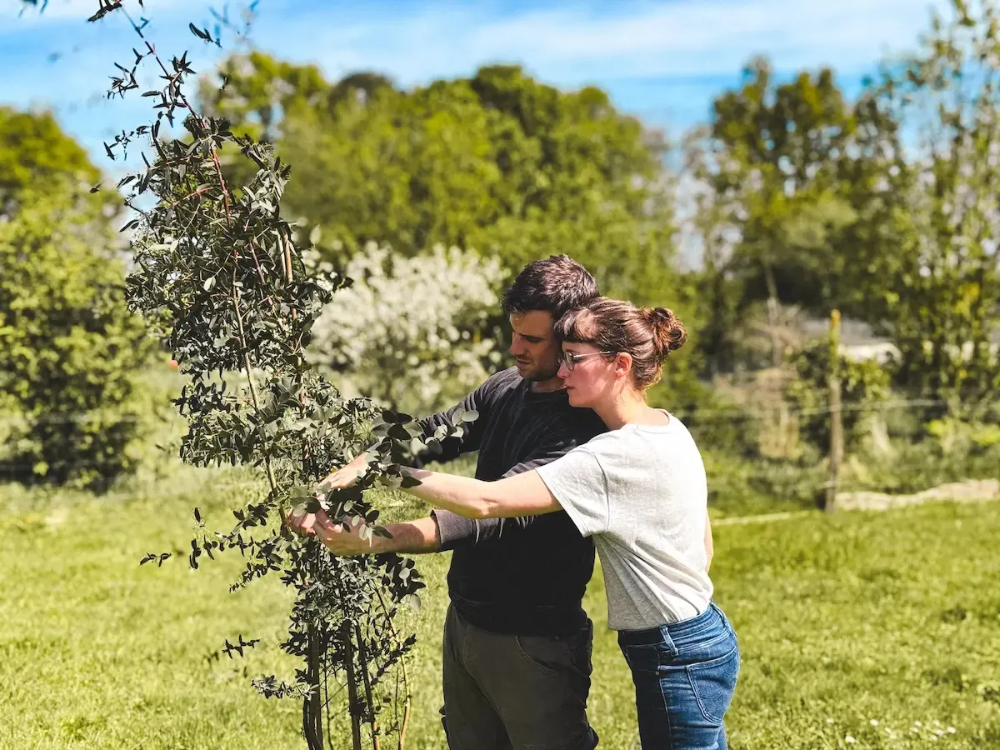
En France, aujourd'hui, 8 fleurs sur 10 viennent de l'étranger.
La plupart des fleurs hollandaises sont cultivées hors sol, dans des serres chauffées, sous lumières artificielles. L'horticulture en Pays de la Loire est un savoir-faire historique.
On sème, on plante, on désherbe, on paille, on laisse la terre se reposer et on prépare vos commandes. Bref, on bichonne notre terre et nos plantes de A à Z.
Une association au service de la fleur locale et de saison : un réseau qui soutient une agriculture plus responsable et fait évoluer les pratiques de consommation.
Une question ? Une demande de devis ? N'hésitez pas à nous contacter, nous nous ferons un plaisir de revenir vers vous.
06 77 63 32 89